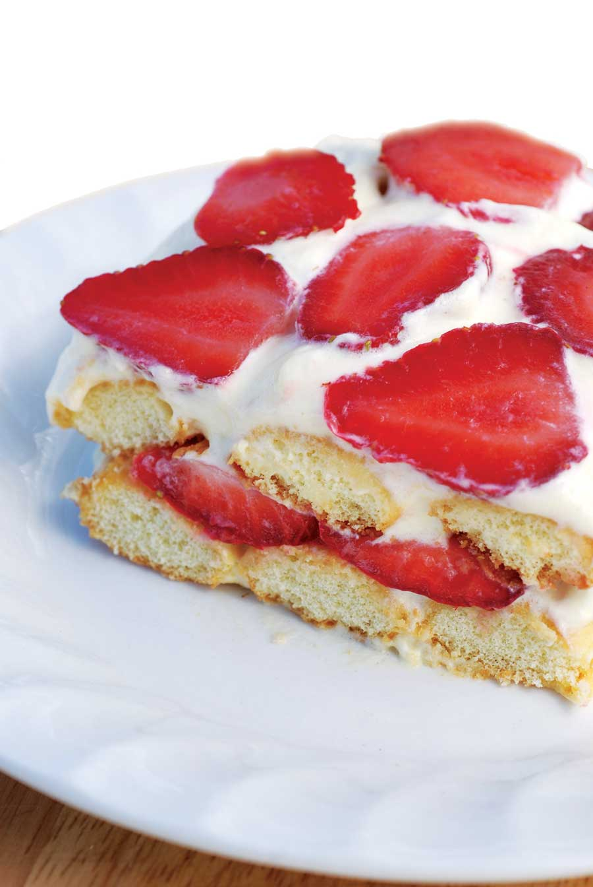

Ingredients:
4 eggs
8 tbsp sugar
8 ounces mascarpone cheese
30 to 40 ladyfingers (sponge cookies)
3 cups strawberries, hulled and sliced
Instructions:
Separate egg yolks from whites in two bowls. Beat yolks until frothy. Add 5 tablespoons of sugar and beat 2 to 3 minutes or until eggs form soft peaks. Add mascarpone and beat 3 to 5 minutes, until smooth.
In the other bowl, beat 4 egg whites, adding the remaining sugar little by little until the whites form stiff peaks. Gently fold mascarpone mixture into egg whites. Cover the bottom of a 9-by-13-inch baking pan with ladyfingers, and spread half of the mascarpone-egg mixture evenly to cover the cookies. Add a layer of sliced strawberries and repeat the same layering: cookies, mascarpone, strawberries. Refrigerate at least 3 hours before serving to allow cookies to soften. Serves 6 to 8.
Check out these fresh seasonal strawberry recipes, too!
|
 ROGER DOIRON Like strawberry shortcake, with a creamy, Italian twist. |
|
|